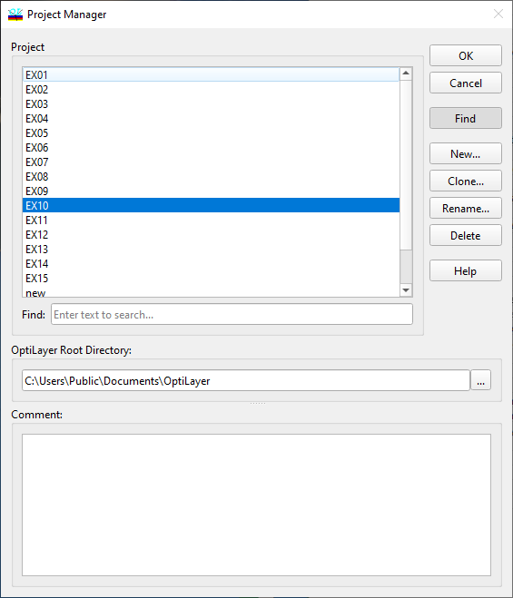
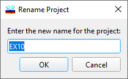
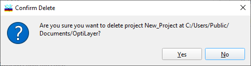
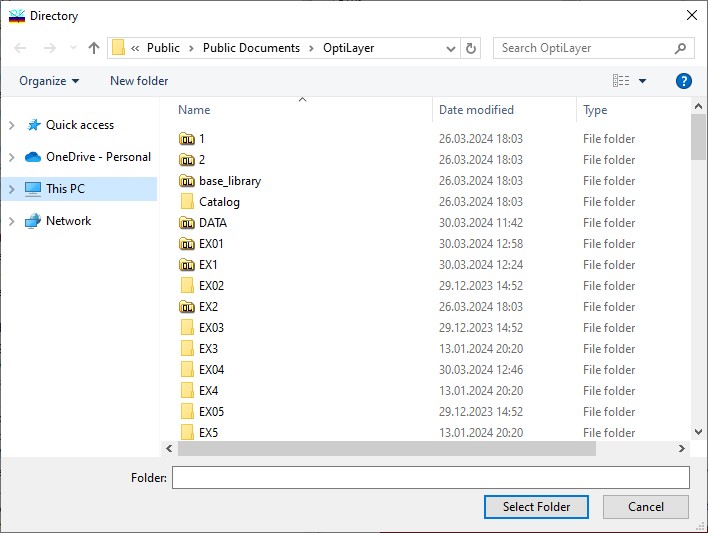

Problem Directory
Problem Directory (DS Mode)
Navigation: OptiLayer Menu Commands > File Menu >
Problem Directory (DS Mode)
` <idh_menu_file.html>`__ ` <idh_menu_file.html>`__ ` <new_problem_directory.html>`__
OptiLayer is structured around discrete database directories that enable users to store all data related to specific issues in separately identified directories on the hard disk. These directories are known as Problem Directories. Each Problem Directory comprises databases for target functions, designs, substrate/incident medium materials, layer materials, etc. The extensive entry and editing options in OptiLayer make it easy for users to create and modify data files. OptiLayer supports distinct configurations and environments for each directory. It saves the configuration and environment status when you finish working with the directory and close it. Upon reopening the same directory, the configuration and environment are automatically restored to the previous status when the directory was last closed. It is important to note that problem directories are compatible with all other programs in the OptiLayer family, allowing common files to be shared among all OptiLayer applications.

The problem list box in this window displays the existing Problem directories. To select a different directory, choose it from the list and click the OK button. You may be asked to save data in the current directory before switching to a new one. To create a new directory, enter its name in the upper line of the window and click the OK button. The comment field at the bottom of the Problem directory dialog allows for storing detailed descriptions of each Problem directory. The text length in the comment field is unlimited.
Notes:

If needed, the Problem directory dialog can be resized. Use the special grip at the bottom right corner of the dialog to adjust its size.

The OptiLayer software family employs the concept of an OptiLayer Root Directory, where a collection of problem directories is stored. Users have the freedom to select any directory, except the disk root directories, as an OptiLayer Root Directory. The OptiLayer Root Directory can be chosen by selecting from the drop-down list at the bottom of the Problem directory window.
The Find button activates the Find panel, assisting in searching for a folder with a specified name. The Clone… button triggers an additional New Problem directory dialog. This function enables the creation of a copy of the currently selected Problem directory. The Rename… button allows for renaming the selected Problem directory. The new name should be specified in a small dialog displayed below:

The Delete… operation enables the deletion of the currently selected Problem directory. This action is irreversible and requires additional confirmation.

The Browse dialog for selecting a new Root Directory is displayed below:

To select a new OptiLayer Root Directory, click the Browse… button to open the Select Directory dialog box.